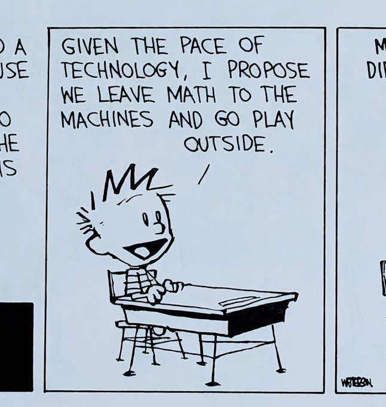

AI in Mathematics, 2026: From Assistant to Top Researcher
4 August 2026
Also on Substack. The equations render more reliably here.
This is an expanded and updated version of “AI in math is going exponential: A working mathematician's view”, an online talk I gave to the Madrid effective altruism and AI safety community on 15 June 2026. A Czech version, “Stroj na věty: Co umělá inteligence dělá s matematikou a proč by nás to mělo zajímat”, followed on 29 June, delivered from Madrid to mostly in-person audiences in Prague and Brno. Given how much happened since then, the post is substantially updated. I am a postdoctoral researcher at ICMAT in Madrid; in my own time I volunteer for PauseAI Czech. These views are my own.
In early June 2026, the mathematical community made a public effort to set a boundary around artificial intelligence. Three separate documents, published independently in Nature, at ICML, and through a large community declaration out of Leiden, all landed on roughly the same thesis: machine learning models are becoming exceptional at technical execution, but deciding what to work on, setting research agendas, and making true conceptual leaps remains uniquely human work.
I gave a talk in Madrid making a similar argument around the same time. Seven weeks later, that boundary hasn't just blurred; it has essentially collapsed as ever more groundbreaking results kept coming.
Not because of a single marketing stunt, but because the specific way that boundary gave way tells us something important about where this technology is actually going.
What the field claimed in June
One of the visible statements was a commentary in Nature authored by researchers from the London Institute for Mathematical Sciences and Google DeepMind. It was an optimistic piece encouraging mathematicians to engage with these tools, but it was clear about their limits: AI systems lack the context, taste, and intuition required to know which questions are worth asking. While noting that progress was accelerating, the authors concluded that “the decisive creative leaps are still made by humans.”
Around the same time, DeepMind researcher Tom Zahavy published a position paper arguing that language models are structurally incapable of the conceptual “jumps” needed for discovery, grounding his argument in an analysis of Einstein's path to general relativity. Meanwhile, over three thousand mathematicians signed the Leiden Declaration. While often described as a declaration that AI cannot do deep math, the text itself was actually a warning about reliability, corporate hype, and commercial incentives, explicitly noting that it reflected the state of tools as of May 2026.
All three documents date themselves no later than June 2026. On an exponential curve, a few weeks is enough to make a snapshot obsolete.
The baseline from my own desk
My perspective at the time came directly from my daily work. As a mathematical physicist working on integrable systems, I don't build these models; I just use standard commercial tools. In 2023, ChatGPT couldn't reliably format my Maple code. By late 2025, tools like Claude Code were saving me hours every week converting output, sifting through literature, and checking calculations.
Yet my practical rule of thumb remained: the model could handle the heavy computational legwork once I picked a direction, but whenever a calculation stalled, it couldn't get me unstuck. If a move required something that wasn't already in the literature for that specific topic, the model just generated confident gibberish. I concluded, like many others, that setting the strategic direction was still our job.
What I overlooked was that individual user experience is almost always a lagging indicator. I was using models available on $20 commercial subscriptions on standard problems, while internal lab setups were already a generation ahead.
The first crack: Erdős' planar unit-distance problem
The clear counterexample came when OpenAI ran an internal system against list of open problems posed by Paul Erdős and solved a prominent one on the list. The problem itself is easy to state: given \(n\) points on a plane, how many pairs can be exactly one unit apart? For eighty years, the consensus was that a standard square grid was optimal.
OpenAI's model disproved that consensus in a single run. Instead of trying to optimise geometric patterns, it reached into high-degree algebraic number fields, a domain of mathematics no geometer working on the problem had thought to apply. Nine mathematicians subsequently verified and cleaned up the argument, confirming that the count actually grows like \(n^{1+\delta}\) for \(\delta \geq 0.014\).
Going directly against an eighty-year consensus and importing tools from an unrelated branch of mathematics isn't just “computing faster.” It is deciding where to look.
Seven weeks of evidence
In the seven weeks since, that result stopped looking like an anomaly. First, at the 2026 International Mathematical Olympiad, four separate models from different organisations achieved perfect 42/42 scores under time constraints, a result also reported in Anthropic's own Opus 5 system card.
Then, Anthropic researcher Levent Alpöge used Claude Fable 5 during the World Cup final on July 19 to construct a valid counterexample to the Jacobian conjecture, a polynomial mapping problem posed in 1939.
And finally, in the last week, came this maelstrom:
- OpenAI's Astra models: Solved ten open problems across mathematics and quantum complexity, accompanied by machine-checked formalisations in Lean. Nabeel Qureshi reported that each of these would probably merit a Fields Medal; mathematician Alex Kontorovich responded with two exclamation marks.
- The Maxwell conjecture: Closer to my own field, a July paper disproved a long-standing conjecture on the equilibria of electric point charges. The authors explicitly stated that the core breakthrough, a specific spatial arrangement using the charge scaling \(q_\varepsilon = \tfrac{3}{4}\varepsilon^3 - \tfrac{5}{32}\varepsilon^5\), was suggested directly by GPT-5.6 Sol. The human researchers simply verified the calculus.
- Individual research: Former mathematician Alexander Gerko, now CEO of XTX Markets, used a standard commercial subscription over a month of spare time to formalise several PhD-level results, including a counterexample to a major open conjecture in his old field.
- Benchmark shifts: Models began clearing research-grade open problems on the FrontierMath: Open Problems evaluation set maintained by Epoch AI, now having solved 3/50.
How shall I compete?
None of the results above came from a basic subscription. The unit-distance construction ran on an unreleased internal model, a full generation ahead of what I pay for out of my own pocket. Astra and the Jacobian counterexample are lab-internal work. Gerko's month of “vibe research” drew on privileges most working mathematicians don't have. Getting a frontier model to actually produce results like these takes running it for tens of hours on problems that resist a quick answer, and a basic subscription is not built or priced for that.
The divide isn't simply frontier labs versus everyone else, either. Axiom Math, a much smaller outfit, matched the big labs at this year's IMO by formalising every solution in Lean, and it has no more access to an unreleased internal model than I do. But whatever Axiom has built isn't widely available either.
On 29 July, OpenAI announced ChatGPT for Academic Researchers: free frontier access, including GPT-5.6 Terra, Luna and Sol plus Codex, for ten thousand researchers this summer, scaling to a hundred thousand through 2027, as part of a $250 million-plus commitment. Eligibility is restricted to “qualifying researchers at degree-granting institutions with significant research activity.” I checked the institution list myself: neither Spanish nor Czech institution is on it.
So the asymmetry that let a handful of labs and one very well-resourced quant find these results first is not closing. It is being redrawn along institutional lines that put me, and most of my colleagues, at a disadvantage. This is why the Leiden Declaration, mentioned above, called for public research compute that does not depend on which company decides to grant access.
The new problem: solved versus understood
This rapid progress has introduced a distinct failure mode. When Henry Yuen, a quantum information theorist at Columbia, examined an Astra-generated proof for an open problem he had pursued for a decade, he confirmed the argument was sound. However, he noted that the exposition was strangely structured.
The paper spent several pages establishing standard, trivial definitions, and then casually introduced the crucial technical breakthrough, a specific Uhlmann transformation, buried deep in a later section as if it were completely obvious.
We are entering a phase where models can identify correct strategic directions and solve complex open problems, but present their reasoning in ways that obscure why the breakthrough works. The proof may hold, but human insight does not automatically follow.
Where that leaves us

Looking back at the June consensus, the boundary line has not held. Models are no longer merely executing steps assigned by humans; they are selecting unexpected approaches, synthesising tools across domains, and handing researchers valid counterexamples to clean up.
Mathematics is the cleanest testing ground for AI capabilities because feedback is unambiguous: an argument either holds logically or it fails. But the underlying capability demonstrated here, selecting an unprompted direction and executing it successfully, is currently being deployed in domains that lack formal verifiers or clear mathematical bounds.
We don't see it that clearly in domains without a Lean or a referee to catch a wrong turn. But that absence isn't the root of the risk; it only means we may not notice the same capability going wrong in more dangerous fields like cybersecurity or bio until later (Both Anthropic and OpenAI recently found their models escaping from sandboxes and attacking real companies during cybersecurity evals).
None of this trajectory is an inevitable law of nature. It is the direct consequence of development choices made within a small number of labs. Historically, when the implications of powerful technical developments have become clear, societies have established boundaries, as seen with gain-of-function research, human cloning, and atmospheric nuclear testing. The rapid shifts in mathematics over the past seven weeks are providing an early, clear record of what these systems can do when left to run.
If you want the full existential-risk argument made to a mathematical audience, Xiaoyu He has posted Existential Risk from AI: An Exposition for Mathematicians, covering takeover, recursive self-improvement, why alignment resists solution, and gives counterarguments to common objections. Most of the article establishes or elaborates on his premises.
One of the people who reached that judgment is Jacob Tsimerman, one of the experts OpenAI consulted on the unit-distance construction. On 23 July, the same day he won the 2026 Fields Medal for his role in proving the André-Oort conjecture, he announced he was joining OpenAI to work on AI safety, on leave from his University of Toronto post. He expects AI to be robustly better than mathematicians at the job within two years, and says the field will have to rethink how it works around that.
If you are a mathematician looking for a way in that starts from your own discipline, he has put together a starting point at mathforaisafety.org.